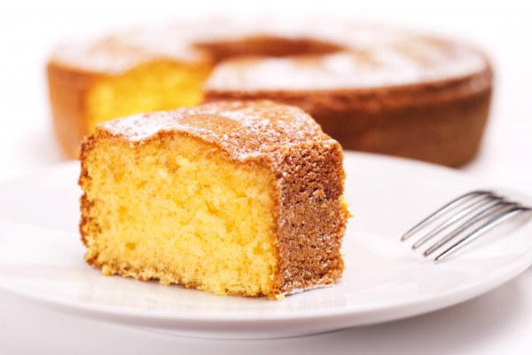

Gâteau au yaourt facile

Ingrédients
Pour 6 personnes
- 3 oeufs
- 1 yaourt nature
- 1 sachet de levure en poudre (5,5 g)
- 2.5 pots de yaourt vides de farine
- 1.5 pot de yaourt vide de sucre
- 1 sachet de sucre vanillé (7,5 g)
- 1/2 pot de yaourt d'huile
- 10 g de beurre
- Etape 1
Mettre dans cet ordre un pot de yaourt nature, la farine, le sucre, le sucre vanillé et mélanger.
- Etape 2
Rajouter les 3 oeufs, mélanger.
- Etape 3
Mettre l'huile, mélanger et ajouter le sachet de levure.
- Etape 4
Mélanger encore, la pâte doit être lisse.
- Etape 5
Beurrer un moule à manqué et y verser la pâte.
- Etape 6
Mettre au four 30 min à 180°C (thermostat 6), en surveillant régulièrement.
Page d'accueil